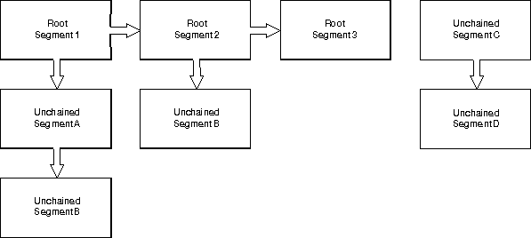

The model transformation drawing attribute operates between world and model space. This attribute can be updated by one of the three following transformation functions:
If the model transformation drawing attribute has never been updated, the attribute defaults to the identity transformation. If the drawing attribute has been updated, the existing transformation is the concatenation of any instance, segment, or model transformations from the root segment downwards. Each time a new segment is opened (using GpiOpenSegment), the model transformation drawing attribute is reset to its default value.
The three transformations that operate between world space and model space are:
The transformations that occur between world-coordinate and model spaces depend on the drawing mode and the possible segment type of the drawing primitive.
The drawing mode can be either nonretain or retain. Nonretain mode is also called draw mode, as the graphics are immediately displayed. In retain mode, the graphics orders are stored in chained and unchained segments. A series of segments are shown in the following figure.

Segments
A model transformation effects objects in any of these segments. A segment transformation affects the six chained segments, on the left and must be issued before Root Segment 1 is accessed. An instance transformation can be applied only to Segment B or Segment D and must be issued from Segment A or Segment 2 or Segment C. The instance transformation is reset on return to the calling segment.